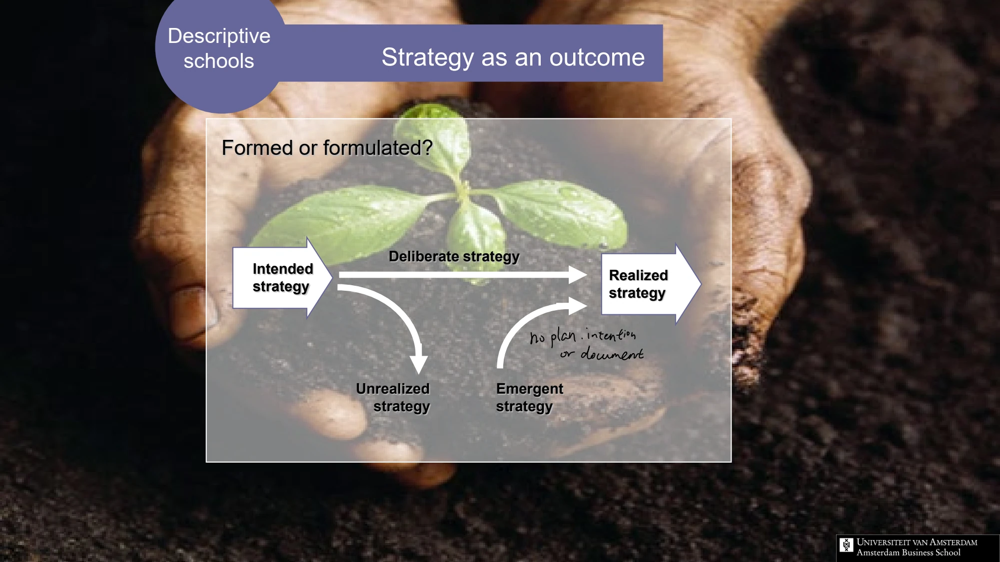

The framework
| Term | Meaning | Review question |
|---|---|---|
| Intended strategy | The direction originally envisaged. | What did we plan to do? |
| Deliberate strategy | The intended elements that were actually realized. | Which commitments became action? |
| Unrealized strategy | Intended elements that did not materialize. | What was dropped or prevented, and why? |
| Emergent strategy | A pattern that developed without being fully specified in the original intention. | What repeated behavior or discovery created a new direction? |
| Realized strategy | The resulting pattern of action, including deliberate and emergent elements. | What strategy did the organization actually enact? |
Key distinctions
Autonomous and induced behavior
Burgelman's model distinguishes autonomous initiatives, often developed from below and supported through an internal political process, from induced initiatives developed within the existing strategy, structure and vision. Both can contribute to corporate entrepreneurship.
Learning is not retrospective decoration
A useful review preserves what was known at the time. If every successful outcome is described as a plan after the event, it becomes impossible to learn whether the result came from a sound hypothesis, adaptation or fortunate circumstances.
How to use it
- Record original objectives and key assumptions.
- Compare them with the actual sequence of decisions.
- Identify emerging patterns and decide which deserve explicit support.
Keep in mind
Emergence does not imply that objectives, discipline or accountability are unnecessary. It describes how patterns can form outside a fully specified plan.
Is realized strategy the same as intended strategy?
Reveal the explanation
No. Some intentions remain unrealized, while new strategic patterns may emerge.
Read the classroom original
Complete pages from the supplied lecture slides. Select a page to read, enlarge or browse its extracted text. Page numbers refer to the PDF’s physical page order.
